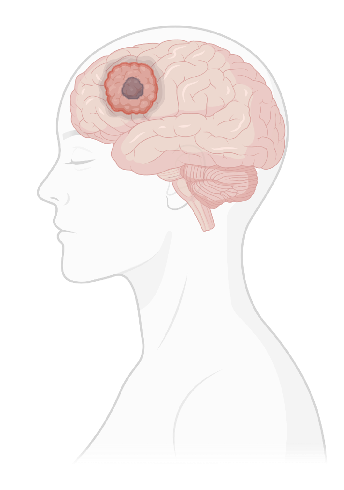
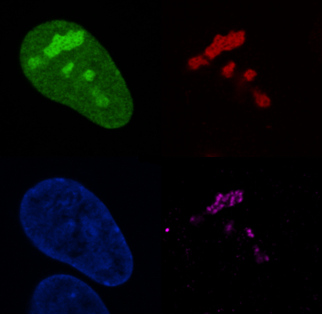

Cells adapt to different environmental conditions by responding appropriately to the stimuli they receive.
These stimuli are sensed by cellular sensors which activate signaling cascades that modulate cell behavior to promote these adaptations.
Cells adapt to different environmental conditions by responding appropriately to the stimuli they receive.
These stimuli are sensed by cellular sensors which activate signaling cascades that modulate cell behavior to promote these adaptations.
Nutrient sensors respond to nutrient availability by regulating cell growth promoting pathways. The iron (II) and alpha-ketoglutarate (α-KG)-dependent hydroxylases are a family of nutrient sensors that regulate key cellular processes. Hydroxylases in the presence of iron (II), α-KG, O2, and ascorbate (vitamin C) hydroxylate unique substrates that activate specific signaling pathways.
This nutrient sensing pathway is deregulated in disease due to alterations in the molecular regulators, as well as the abundance of specific nutrients. For example, sustained lack of vitamin C in our diets causes scurvy, a disease affecting the connective tissue. Our lab investigates how cells respond to specific metabolic stimuli by dissecting the mechanisms whereby α-KG dependent hydroxylases regulate growth-promoting pathways with a focus on disease.
Role of diet in glioblastoma malignancy
 Glioblastomas (GBM) are the most aggressive tumor type of the brain with a median survival life of 15 months. The first line of therapy for GBM was established in 2005 and consists of surgical resection, radiotherapy, and chemotherapy with temozolomide. GBM tumors frequently develop resistance to treatment and to date, there is no standard therapy for recurrent GBM.
The contribution of lifestyle to increase risk of cancer incidence is more and more being established in different cancer types. In GBM, whether lifestyle habits such as diet affect tumor malignancy is still unclear. Our laboratory investigates the role diet plays in regulating specific molecular pathways that promote growth in GBM cells. Our goal is to identify specific GBM vulnerabilities that will help us in the search for effective therapies against this tumor type. We hope that our research will lead us to the design of dietary interventions that not only improve the outcome of GBM patients but perhaps help us in preventing the initiation of the disease.
Regulators of nucleolar activity in disease
 One of the main characteristics of cancer cells is its capacity to continually increase biomass production. To achieve that, cancer cells increase nucleolar size and activity to boost ribosome biogenesis and promote cell growth. Indeed, nucleoli number and size are frequently used to grade solid tumors.
In the recent years, our work and the work of others have shown that cancer cells switch on specific metabolic and molecular pathways to maintain the rapid pace of their hyperactive nucleolus. Inhibition of these pathways causes nucleolar stress leading to decrease ribosome biogenesis and stabilization of the tumor suppressor p53 which in turns decreases tumor growth.
Our lab investigates the specific regulators that promote nucleolar activity in cancer cells. Our goal is to identify the molecular pathways that activate nucleolar activity specifically in cancer cells with a focus on glioblastoma. We hope to uncover novel pharmaceutical targets that we can use in the clinic to treat glioblastoma and other cancer types.